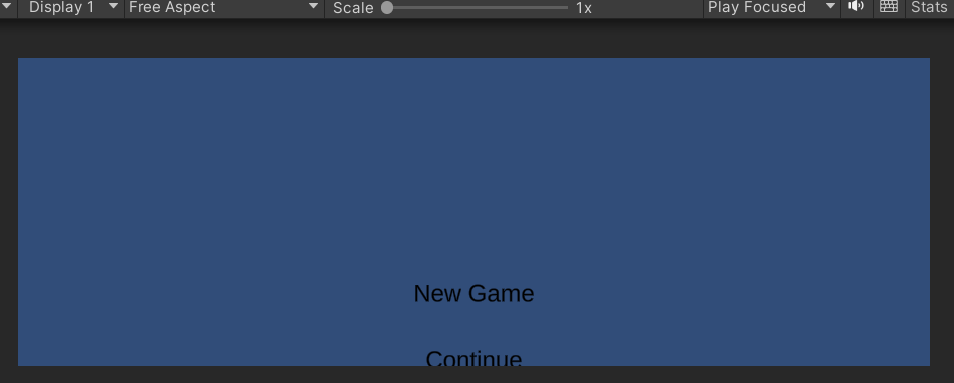
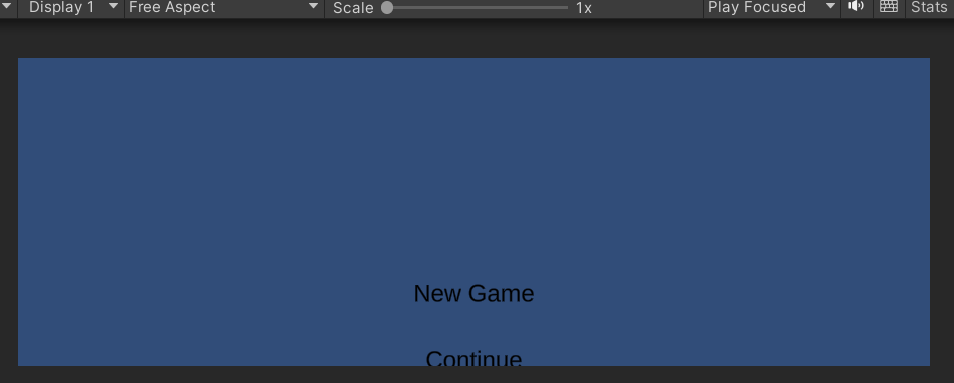

CSE 4410 April 13, 2023
Aldo Avalos, Omar Valle, Kevin Villatoro, Victor Vera, Alex Dragoi, Tim Chester
For our second push of updates and additions to the game, we wanted to focus on scene changes and adding collision to our world. While visually we may have had a lonely house surrounded by lush greenery, as far as the player was concerned, it did not exist. Collision was added to the house and surrounding area so that the player and enemies can no longer go out of bounds or through things they shouldn’t. This can also be ported to further scenes to allow the workflow to become quicker in the future.
A save and load system was also implemented. This system allows the game to save the progress of the player to a file. The data of the player, such as their level, current hit points, and exp points are saved to the file. They can then be loaded when a scene starts by pulling the information back out of that file. This system can also allow us to initialize our characters when we load into a new scene. In the future, we will also include the inventory in this system as well, so that the inventory can be saved and loaded.
We have also started on the main menu. The main menu is fully functional and allows for starting a new game, or continuing one from a previous save file. If a new game is started then a default new game save file will be created, otherwise, when continuing, the scene that is loaded will pull information from the previous save file.
Another new implementation in our video games was the addition of a dungeon level. In order to do this we used a new set of tilemaps with a castle theme and added a set of objects for decoration. Collision was add3d to the walls and objects to prevent the enemies and our player from running off the map.
.png) 


CSE 4410 March 2, 2023
Aldo Avalos, Omar Valle, Kevin Villatoro, Victor Vera, Alex Dragoi, Tim Chester
Welcome to the beginning of development for our game! As you may know, we are making a top down JRPG in the style of the Mario and Luigi games. We are aiming to have top down exploration, and an active, timing based system for the combat of the game. Firstly we were able to create the tileset for the starting area. This means that we were able to create the visuals for the starting area for our game. We had to use Unity’s layer system in order to stack visuals for objects like a house and trees on top of the ground. This same layering system will allow us to create colliders only for certain parts of the visuals like walls or objects. Something we’re trying to implement is adding collision to some of the tiles. Objects in our environment like the river, house, trees, hills will need collision so that our character does not fall out of the map and will make the level design look great.
Next, we also created a player character that can be moved with W-A-S-D. They are fully animated to move up, down, left, and right. Every frame, Unity engine checks for whether the player has pressed the buttons for movement. If they have, then Unity applies a force in that direction using its own rigid body 2d system. On top of this, an attack was added to the player character. In the animation for the attack, a child object is manipulated to appear in the direction of the attack. If this object overlaps with an enemy, the enemy can react to it in some way. We will implement a function that allows a transition to the battle scene when an enemy is attacked.
Speaking of enemies, an enemy script was added to allow for random movement. This enemy will move in a random direction after a certain number of seconds. On top of this, there is a 50% chance that it will not move at all. Hopefully this allows for an unpredictable and organic feeling enemy. A partner was added. This will be our Lucia, or Max, depending on who you want to play as, because you will be able to switch between the two. This partner will automatically follow you as you explore the world. You can also press left alt to switch between the two characters.